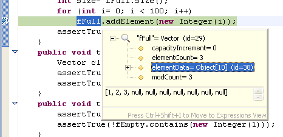
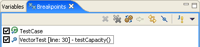
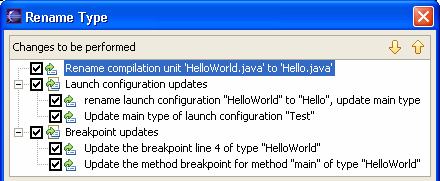
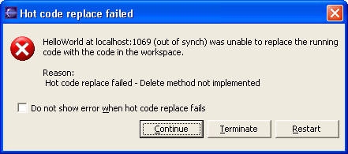
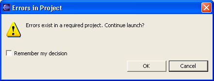
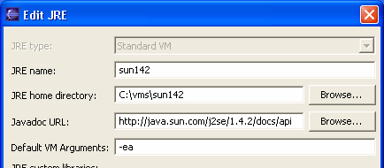

Here are some of the more interesting or significant changes made to the Java
development tools for the 3.0 release of Eclipse since 2.1:
|
Item title, right justified, in bold, with no trailing
punctuation |
Blurb. If a small image sheds light, place it below the description, in a
separate paragraph. Screen snapshots should be done at 1152x864 resolution
on Windows XP with default theme, default fonts, and default font size. Crop out any extraneous stuff to focus the reader's attention
on your new feature. The image
should be no more than 466 pixels wide and in GIF format (not TIF,
not BMP, not JPG) with an exact palette (not web) so as to properly
capture the gradient shading in the borders. Name the file is a way that
is appropriate and specific to the item (e.g., key-bindings.gif, rather
than something generic like image.gif). |
|
Pop-ups for inspect/display
|
Evaluation pop-ups are now used for all Display
and Inspect results.

|
|
Logical Structure
|
The
Java debugger now allows certain Java types, including collections and
maps, to be displayed in a more compact and meaningful form. These
logical structures are controlled by a toggle button in the Variables view.
|
|
System thread filter |
System threads are now filtered out from the Debug View by
default. The Show System Threads command in the view's drop- down
menu toggles the filter on/off. |
|
Step Into Selection on any line
|
The Java debugger's Step Into Selection
command is no longer restricted to the currently executing line. |
|
Class prepare breakpoints
|
Breakpoints can be set on a class prepare
event. The program will be suspended when the specified class or interface
is first loaded by the VM.

|
|
Exception breakpoint hyperlinks
|
Exception
breakpoints can be now created directly from a stack trace in the console.
Clicking on the hyperlink that appears under the exception name at the
beginning of a stack trace opens a properties dialog on the newly created
(or already existing) exception breakpoint.

|
Breakpoints in external source
|
You can now put a
breakpoint in external source code (i.e., source code that is not on the
build classpath of a Java project). The breakpoint creation actions on the
Run menu automatically create external breakpoints whenever the
debugger is displaying external source. |
|
Refactorings update breakpoints and launch configurations
|
Breakpoints and launch configurations are now updated as a
consequence of Java source code refactorings such as renaming a Java
project, source file, or type declaration.

|
|
Restart option when hot code replace fails
|
When changes are made in the host VM that hot
code replace does not support, you now have the option to Restart the VM
in addition to choosing Continue or Terminate.

|
|
Launching applications containing compile errors
|
You are now warned when you launch a Java
application from a project containing compile errors. This feature is
controlled from the Java > Debug preference page.

|
|
Default VM arguments can be associated with a JRE
|
The Java > Installed JREs preference
page now lets you associate a set of default VM arguments with each JRE.
These arguments will be passed to the VM whenever it is used.

|